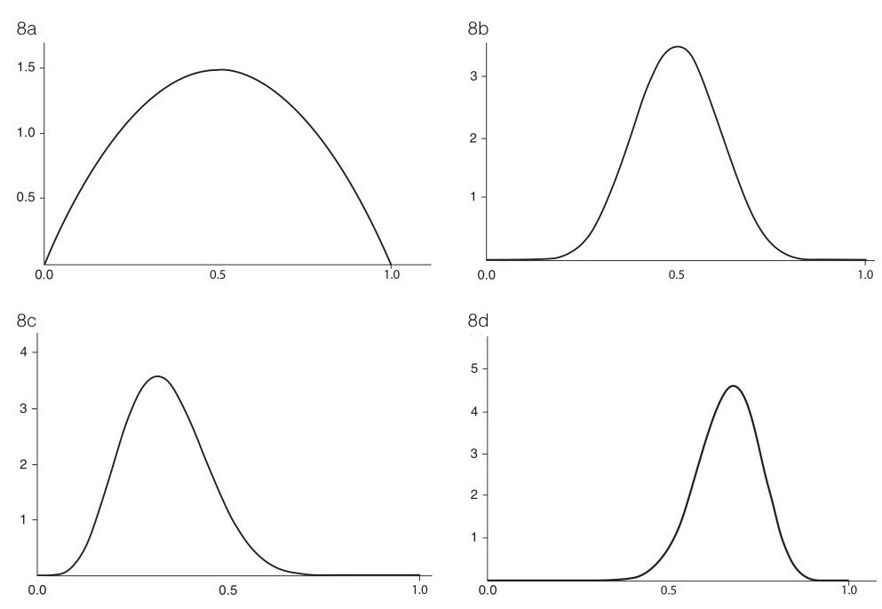
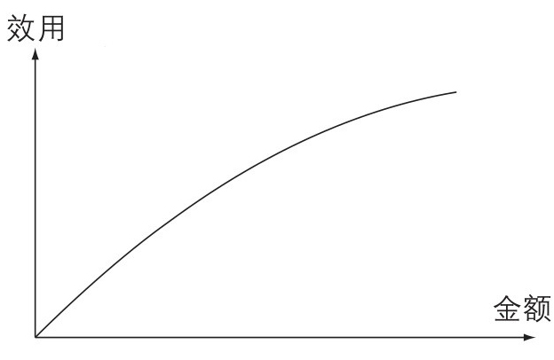

这里我会介绍在我们面对不确定性问题的时候，概率的观点是如何起作用的，还会描述一些误解了概率的情况。
赔率？
回忆之前我们说过，概率可以用赔率(odds)的形式来描述，反之亦然：概率是1/5和赔率是4比1是相同的。不幸的是，“赔率”这个术语也已经被赌徒们篡改成了一个相当不同的意思——如果你选择的马胜出了，你获得的赌资。所以当你听说“海都之星(Sea The Stars)”在2009年德比大赛(Derby) [1] 中以11比4的赔率胜出，这只是说明了对于押在这匹马上的每4英镑赌注，它如果赢了收益就是11英镑。“11比4”没有与胜利概率之间的必然联系。这个比例只依赖于赌徒对于马胜出概率的主观评定。对于像“11比4”这类的表达，术语“赔付金额(pay out price)”是一个更准确的语言使用方式，但遗憾的是，我们不得不接受在赌博情境中对于“赔率”一词的滥用。
如果两边都没有经济收益上的优势的话，赔付金额就被称为“公平的 ”。也就是说，赌注的平均值是0。从洗好的牌堆中正确地抽出指定花色牌的公平赔付金额是3比1，这也就是抽中的赔率。
因为商业赌博不会在没有庄家收益(house advantage)的时候运行，就是说，商业赌博都是不公平的。对一家英国赌场的轮盘赌来说，所有的37种结果都是等可能的，赌其中一个数字的赔付比例只有35比1，而不是公平的36比1。所以一次37英镑的赌局回报的平均值只有36英镑，这就得出庄家收益率——对于任何赌局庄家都预期会赢——为1/37，大约2.7%。
这个优势对大多数你能想象得到的轮盘赌局都是一样的：无论你是赌一对数字，还是3个、4个、6个、12个，对于你下注的每37英镑，你的平均回报总是36英镑。在拉斯维加斯，标准的庄家收益还会更大一些，因为一个多加的格子，双零(double zero)会给出38种结果，但是赔付金额和在英国时相同。38美元的平均收益通常是36美元，庄家收益率是2/38，或者说5.3%。
赌马的另一种形式是通过同注分彩系统。这里，押在所有的赛马上的赌注被放入彩池中，以固定比例——常见的是80%——被押了获胜马匹的人按照他们下注的比例分享。无论哪匹马获胜，分彩收益率就是20%。
赛马中，赌注登记人(bookies)的收益的大小取决于哪匹马获胜了。虽然赌博者在单次比赛中都既可能收益也可能损失，但最近的数据给出了一个令人清醒的事实：在赔付金额为6比4的时候，赌博者预期会损失他们赌本的10%；赔付金额在5比1的时候，预期损失大约13%；在10比1的时候，平均损失超过了23%；如果你投机地定下50比1的赔率，预期你会损失2/3的钱。
这个现象被称为热门冷门偏差 (favourite-longshot bias)。赌博者在更受欢迎的马匹上输钱会比高赔付金额的输钱更慢 。2009年，蒙莫梅(Mon Mome)在英国国家赛马障碍大赛(the Grand National)中以100比1的赔率获胜之后，博彩公司都很高兴。绝对风险，还是相对风险？
假设在一群特定的人中，未来50年内大肠癌的发病概率是1/1000。我们预期在10 000人中，会有10个人罹患大肠癌。一种新的药物会将这个概率减小至1/2000：意味着如果药物投入使用，10 000个人中只有5个人会因癌症身亡。医药公司就会将新闻稿加上“患癌风险降低50%”的大标题。这的确是精确的：对于每个人来说，风险的确会减半。
这个计算方法描述了相对风险的降低 ，并且经常会因为对数据的过于乐观的解读而饱受诟病。假设初始的风险是1/10 000 000：将它减小50%得到新的风险数字1/20 000 000，但是在前后两种情况中，这个风险是相当的小，以至于在10 000个人中，我们预期两种情况给出相同的患者数字——0。尽管风险被减半了，药品也几乎不会产生什么作用。
但是假设这群人患癌的风险是比较高的，比如说40%。一种能将概率减少到20%的药物不但有资格使用那个大标题，甚至会被称为重大突破，因为在10 000个人中，患癌人数整整减少了2000人。
考察绝对风险而不是相对风险的变化，通常是更有意义的。在上面的第一个情景中，绝对风险从0.1%变成了0.05%，降低了0.05%；在第二个情景中，降低了一个极小的数字0.000 005%；而在最后一个情景中，降低了令人印象深刻的20%。
一个合理的描述方式是陈述为了阻止一个恶性病例的发生，平均有多少个病人应该使用药物——需治疗人数 (the Number Needed to Treat)或者说NNT。这个数字越小越好，它也就是绝对风险的变化的倒数。在上面的例子中，NNT分别是2000、20 000 000和5。
为了阻止一个恶性病例的发生而去治疗20 000 000人，很难说这是正当的。NNT，连同对治疗费用和疾病影响的严重程度的了解，让我们能做出关于分配卫生保健资源的合理决策。
组合小概率
在大量均具有微小概率的事件中，有多大可能至少有一个发生？在考虑灾难发生概率的时候，这会是一个相关的问题。如果无数组件中的任何一个失效，复杂的系统或者机器就会失效；两架飞机会相撞吗？一座核电站的堆芯可能会熔毁吗？所谓的波莱尔-坎泰利引理 [2] (Borel-Cantelli Lemmas)给出了一些提示。数学结果告诉我们，在很多情况下，重要的是这些微小的概率的和 ：如果这个和是无穷大的，那么灾难一定会发生。
结果就是我们永远不会满意于当前的安全标准。持续进行改进是必不可少的。因为无论我们的安全标准有多高，在某一个月中，一定会有不为0的失效概率：而且无论这个值多么小，如果它保持不变(或者它降低得比较慢)，大量月份的概率和就会变得无穷大，灾难一定会在某一时刻发生。
一个持续改进的充足计划也不会保证一定能避免灾难，但是满足于现状就是坐以待毙。
一些误解
(a)当一个医生告诉患者一种特定的药物有30%的概率会引起令人不快的副作用，他的意思是他预期有30%服用了这种药的患者会遇到副作用。然而，这个患者也许会相信当她服用这种药物的时候，在30%的次数中有副作用产生。医生考虑的是他看到的所有患者，这个患者考虑的是她服药的次数——他们的参照类别 (reference class)是不一样的。
(b)公众会如何解读电视天气播报员说的“明天芝加哥下雨的概率是30%”？播报员们预期他们的听众会进行频率解读，即长远地看，如果天气情况类似于现在看到的那样，在30%的情况下，第二天会下雨。
但是当被问及此事的时候，即使在那些对于“30%概率”这个说法感到满意的电视观众之中，解读也是各种各样的。一些人认为他们被告知城市中的降雨区域超过30%；其他人认为芝加哥会在一天中30%时间中下雨；还有一些认为30%的气象学家预期会下雨!一小部分人认为一定会下雨，30%这个数字意味着降雨的强度。播报员们提及的事件和听众们理解的事件会有很多不匹配。
(c)如果随机选择至少23个人聚集在一起，其中有两个人生日相同的概率就会超过1/2。人们第一次听说这个事实的时候通常会感到惊讶，但是在计算证明了这个断言是正确的之后，他们会被说服。然而，一小部分人仍然不会被说服，因为他们以为自己被告知，如果另外22个人被聚集起来，其中的一个和他们 生日相同的概率超过1/2。听仔细!
(d)假设有一枚被认定是公正的硬币，连续9次投掷中均反面朝上。或许是受到了某些要求正面立即掺和到连续出现的反面之后的“平均法则”的影响，一些人就会宣称下一次投掷几乎确定地是正面朝上。这样的法则并不存在。大数定律的确会暗示正面和反面朝上的比例是相等的，但在长远的 情况下，任何的连续9个反面的序列都会被前面或者后面的1000次投掷抵消。
或者一些人会(正确地)指出出现连续10次反面朝上的概率小于1/1000，所以当他们看到9次连续的反面之后，可能就会“推断”下一次也是反面是非常不可能的。但是这是伪逻辑。即使我们有连续的9次反面朝上，第10次反面朝上的概率也是1/2。这是事件的绝对概率和条件概率之间产生的混乱，它也在1996年的一个著名事件中体现出来：赛马骑师弗兰基·戴图理(Frankie Dettori)在雅士谷(Ascot)赢得了前6场赛马，因为从来没有人会赢得一天之中的7场赛马，戴图理赢得最后一场几乎“必须”是不可能的。但是他的确赢了。极少有人会在7场比赛中的前6场均胜利，但是一旦有人做到了这一点，他可能也会赢得最后一场。
问你自己：我是在评估20件事情发生的绝对概率，还是已知前19件事已经发生的情况下，评估第20件的条件概率？
(e)报纸经常会在巨大的时间压力下出版发行，所以一些文章包含有荒谬的内容也容易理解。但是有3个报道是需要批评的。
当从超市买来的6个鸡蛋全都是双黄蛋，报纸就会宣称一件令人震惊的事件发生了。1000个鸡蛋中，只有1个有这样的特性，所以得到一整盒的双黄蛋的概率就是连乘6次后的一个非常小的值了。这个数字结果是如此小，以至于如果你每秒打开一个盒子，你预期要用300亿年才会遇到一个只装有双黄蛋的盒子。
但是这个计算只有在6个鸡蛋都是从双黄蛋比例是1/1000的大量鸡蛋中被独立选择而来的时候才有意义。但是事实并不是这样。在装入盒中之前，鸡蛋都是被按照尺寸分类了的。有些盒子上甚至被标上了装有双黄蛋的标签……
针对某一个英格兰足球队长私人生活的指控曝光，一名记者对于球队经理的4种可能的反应给出了“可能性”数值：
(a)将他从球队中开除——1/10；
(b)留在球队中，但是要求他辞职——3/10；
(c)留在球队中，但是废除队长职务——6/10；
(d)不采取行动——8/10。
这4个估计的概率中的任何一个单独都是貌似可信的。但是因为它们都关联着互斥的结果，它们的和就不能超过单位1。然而这些“概率”加在一起是1.8。
第3个报道中说，在英国国家彩票中赢得至少50 000英镑的人的名字，大多包括了约翰(John)、大卫(David)、迈克尔(Michael)、玛格丽特(Margaret)、苏珊(Susan)和帕特里夏(Patricia)。目前为止看起来还好，但是因此应该在购彩票集团中引入有这些名字的人就是很荒谬的了!
描述未知
从一个洗好了的牌堆中抽出一张牌，我预期红牌和黑牌是等可能的，我可以很自信地将红牌的概率赋值为“1/2”。使用一个稍微令人费解的方式，我会说我将抽到红牌的概率的分布 百分之百地分配给1/2——百分百显示了我的信心。如果我确定概率是一个确定的数字，那么我就将这个数字附加上百分之百。
但是我经常无法选择单独一个数字：我对错过中转火车的最佳估计可能是3/4，但是2/3和4/5也貌似是可信的，甚至接近于极限值0和单位1的值也不是完全不可能的。我可以用一个0到单位1的连续分布来描述我对这个不确定概率的感觉。

图8 贝塔分布的一组图像
完全未知的概率——非常罕见的情况——可以被图5中的连续均匀分布描述。更常见的情况是，首先有一个中间值，它是你以单个数字对这个概率给出的最佳猜测，然后你会直觉地认为更大和更小的值的分布会降到0。图8展示了具有这种性质的被称为贝塔分布 (beta distribution)的一组图像。
图8a是我们对概率的值知之甚少的情况，我们将1/2当作最可信的值，但是像1/5一样小和4/5一样大的值也是很有可能的；在图8b中，我们对这个值接近于1/2更有信心了，同时也不排除极端值；在图8c中，我们最相信的值接近于1/3；图8d中的分布强烈地集中在了2/3周围，而且对于这个值小于1/2的期望是非常低的。
我的车加了10升油的情况下能开多远？当预热之后匀速行驶的情况下，我预期能开90英里，但如果我在几周内进行过几次短程行驶，就更可能是60英里了。在这两种情况中，这个距离都会有一些不确定性，可以用连续分布来表示。为了找出是哪种分布，想象一下将这些汽油分成10毫升一杯的小份。一共就会有1000个这种杯，总的距离就会是这1000杯中每一杯行驶的距离之和。回忆中心极限定理，大量随机量的和 趋向于遵循高斯分布。
对于恒定速度的高速公路行驶，我会选择中心位于90的高斯分布，方差小所以峰很尖。对于在城镇中的情况不定的行驶，我也会用高斯分布描述，但是中心在60而且分布比较宽来显示较大的不确定性。
效用
有位仙子让你进行一次选择。她给你1英镑，或者她掷一个硬币，如果你猜对了正反面，她就会给你10英镑，否则你什么都得不到。你会做出什么选择？
备选的选项是确定得到1英镑或者一个公平的赌局，回报是5英镑。几乎所有人都会更喜欢后者，但是将问题中的金额都乘上1 000 000，人们的选择就必然会变化。比起什么都得不到与得到500万英镑概率对半来说，确定能够得到100万英镑，更有吸引力。这种差别背后是效用 (utility)这个概念起作用。
对较小的总金额，翻倍的确 意味着翻倍，但是如果100万英镑会为你和你的家人带来相当程度的快乐，将这个值翻倍就不会使快乐翻倍。无论你选用什么单位来计量货币金额的“价值”，通常效用和金额之间的关系曲线的形状会像图9所示：图线总会上升，一开始像一条直线，但后来增长得越来越缓慢了。

图9 一般的效用曲线的形状
“效用”解释了为什么房主和保险公司会同意总额250英镑是合理的年度保险费，这笔保费能够确保你在火灾、沉降或者洪水中免受25万英镑的房屋损失。保险公司的大额赔款意味着，对于任何单独一栋房子，这笔赔款可以看作与相关的数目较小的赔款预期的和是相等的。只要在任意一年中需要赔款的概率小于1/1000，保险公司在这笔交易中的期望值是正的，它就会盈利。另一方面，没上保险的房主就需要面对巨额的负效用，如果房子遇险，损失25万英镑，所以对于她来说，主动放弃250英镑来阻止这种可能性就是一笔合适的交易。
给诸如电视机、微波炉等的损坏上保险通常是坏主意。损失的总额很小，负效用和赔款本质上是相等的，保险公司会收取大额的保险费来保证盈利。应该将假想的保费存入银行作为修缮基金，而不是买高保费保险。很少有人会因为这么做而后悔。
如果你能成功地创建你自己的效用函数，你能够用它在不确定性存在的情况下做出选择。对于每一项行动，计算各种结果的预期效用 (expected utility)，即用对应的概率对效用加权，然后选择预期效用最大的一项行动。
无论具体情况如何，这就是概率论者做选择时候的通用秘诀。
[1] 全称Epsom Derby，为每年在英国举行的赛马比赛。
[2] 概率论中的一个基本结论。